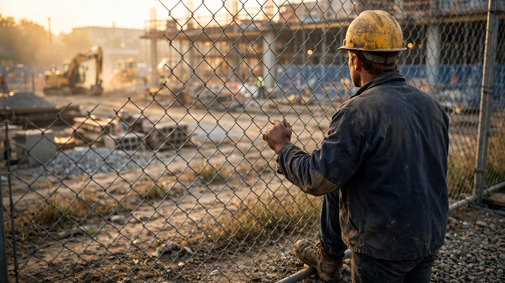

July 5, 2026 • By Marcus Washington
Your Hiring Software Rejected 14 Roofers Last Month. Three Had 20 Years of Experience. All Had Records.

Danny Aldridge spent eleven years hanging drywall in Phoenix before a possession charge in 2014 put him in Perryville for twenty-two months. He came out in 2016, got his tools back from his sister's garage, and found work with a residential framing crew within six weeks. His foreman, a guy named Carl, had done eighteen months himself in the nineties. Carl didn't ask about the record, just asked if Danny could carry a sheet of five-eighths up a ladder without dropping it.
That was the old system, and it ran on foremen who knew what mattered.
Last February, a midsize GC in the Phoenix market adopted an AI-powered applicant tracking system to "modernize" its hiring pipeline. Danny applied for an open framing position. Its system flagged his criminal history, scored his ten-year employment gap (2004 to 2014 included pre-construction years that the algorithm collapsed into a single void), and ranked him in the bottom quartile of 43 applicants. He never got a call. Seven weeks later, that framing position was still empty.
349,000 Workers Short. And Counting.
According to the Associated Builders and Contractors, the construction sector needs 349,000 net new workers in 2026 just to stay level, a number that climbs to 456,000 in 2027. JLL reported in April that by 2030, 2.1 million skilled trades positions for electricians, HVAC techs, plumbers, pipefitters, and maintenance workers could sit empty nationally, costing the housing sector $10 billion a year in delayed construction, per NAHB estimates.
None of this is abstract. Your kitchen renovation takes fourteen months instead of eight because nobody can find the tile setter who retired last March and the apprentice who might have replaced him failed a background screen and went to work at Amazon instead. A subdivision in Round Rock sits half-framed through a Texas summer because the framing crew that usually handles it lost two guys to ICE enforcement and the GC's new hiring platform filtered out every applicant with a gap longer than six months. Ford CEO Jim Farley told a podcast in January that his company had 5,000 open mechanic positions it could not fill, even at salaries reaching $120,000 a year. "We are in trouble in our country," Farley said.
Into this gap, the construction industry is pouring AI.
Second Chances Go Algorithmic
Construction has always been the place where people with records rebuilt their lives. A longitudinal study published in the Journal of Quantitative Criminology tracked formerly incarcerated individuals across an eleven-year period and found that 29.1% of those who found employment worked in construction. That share was nearly double the rate for the general population. Administrative and support services came second, and when researchers drilled into the occupation codes, a third of those workers were doing construction trades through temp agencies anyway.
In the United States, the numbers tell the same story from a different angle. More than 70 million Americans carry a criminal record, according to a 2022 White House report. Nearly 75% of formerly incarcerated people remain unemployed a full year after release. Among unemployed men in their thirties, more than half had a criminal history of arrest, per data from the National Longitudinal Survey of Youth.
Construction absorbed these workers because construction didn't care about your past. It cared about whether you showed up at 6 AM and whether you could do the work. A foreman's handshake was the background check.
That handshake is being replaced by an algorithm.
How the Screens Work Against Blue-Collar Hiring
AI-powered hiring platforms were built for white-collar recruitment. They were trained on data from corporate applicant pools where steady employment histories, four-year degrees, and clean background checks are normative. When construction companies adopt these same tools, the models carry their assumptions into a labor market that operates by fundamentally different rules.
Consider what the algorithms penalize, starting with employment gaps. Construction workers have them routinely: seasonal layoffs, project-to-project transitions, injury recovery, and yes, incarceration. A twenty-month gap in a software engineer's resume is a red flag, a signal that something went wrong professionally or personally, but a twenty-month gap in a roofer's resume could mean anything from a slow winter to a torn rotator cuff to a county jail sentence for a bar fight, and the algorithm treats all three the same way, collapsing an entire biography into a numeric penalty that gets subtracted from a score nobody will ever explain to you.
Lack of formal credentials. Many of the most experienced tradespeople in the country never attended a four-year institution and hold no formal certifications beyond an OSHA 10-hour card, and the algorithm downgrades them in favor of applicants from community college programs who have never touched a nail gun but whose resumes happen to parse cleanly into the software's expected format.
Criminal records. Brookings researchers found that large language models used in resume screening caused significant racial discrimination, particularly against Black men. A Stanford study demonstrated that AI screening tools distinguished applicants by race even when demographic information was absent from the application, a phenomenon researchers called "proxy discrimination." HireVue's platform, used by over 60% of the Fortune 100, evaluates video interviews using facial analysis and speech patterns. Workday's screening tools are the subject of a federal class action, Mobley v. Workday, in which a judge ruled the AI tool can be treated as an "agent" of the employer for discrimination purposes.
These tools were not designed to evaluate whether someone can frame a wall.
Calculating an Exclusion Gap
Here are the numbers: roughly 8.2 million workers build things in the United States. Approximately one-third carry a criminal record of some kind, based on extrapolating the NLSY97 data and Bureau of Justice Statistics estimates for the working-age male population, which puts the figure at approximately 2.7 million people who swing hammers, pull wire, and pour concrete while carrying a conviction that an algorithm would use against them.
If AI screening tools reject candidates with criminal records at even a 40% higher rate than human reviewers, which is conservative given the Stanford and Brookings findings on proxy discrimination, the industry could be losing access to tens of thousands of qualified applicants annually. In a market that needs 349,000 new workers per year, that exclusion is not a rounding error. It is a structural failure layered on top of a workforce crisis.
And embedded in those figures is an irony worth sitting with. Goldman Sachs analysts noted in July 2026 that AI-related job losses in marketing, design, and customer service have been "offset by job growth in the construction sector as tech companies race to build data centers." Construction is absorbing workers displaced by AI from white-collar industries, while simultaneously deploying AI tools that reject the workers it desperately needs from its own labor pool.
What the Law Says. What the Algorithm Does.
Thirty-seven states and over 150 municipalities have passed ban-the-box legislation, prohibiting employers from asking about criminal history on initial job applications, requiring employers to evaluate the person first and the record second.
AI screening tools comply with the letter of these laws while violating their spirit. No question about your record appears on the application form, but the automated background check fires before a human ever reviews the file, and the scoring model has already penalized you for the gap years that correspond to your sentence before anyone reads your name. California prohibits AI from inferring criminal histories through social media activity and requires employers to maintain AI-related decision records for four years. New York City's Local Law 144 mandates annual bias audits for automated employment decision tools. Colorado allows applicants to appeal adverse decisions made by AI systems.
But enforcement of these requirements remains thin across nearly every jurisdiction. Under the EEOC's four-fifths rule, disparate impact exists when a protected group's selection rate falls below 80% of the most-selected group's rate. Proving that requires data the employer controls and the applicant never sees.
What applicants face on the other side of the screen is silence. When a rejection email arrives at all, it says "we have decided to move forward with other candidates," with no disclosure that an algorithm scored you and no appeal process that lets you challenge its reasoning. Federal law under the FCRA requires notice when a background check leads to adverse action, but many AI platforms classify their initial screening as a "pre-qualification step" that technically precedes the formal background check, and in the gap between regulation and implementation is where thousands of qualified construction workers disappear from the hiring pipeline without anyone noticing or counting them.
Workers Who Still Get Through
Researchers at Cornell developed a tool called Restorative Records, designed to help HR departments evaluate applicants with criminal histories by matching conviction types to job-relevant risk factors rather than applying blanket exclusions. What they found confirms something that experienced foremen already knew: workers with criminal records perform better on the job, are promoted faster, and have fewer workplace incidents than workers without records.
Better on-the-job performance, faster promotion rates, and fewer workplace incidents. Read it again if you need to.
When the Chartered Institute of Building surveyed construction managers, only 25% said they would consider hiring someone with an unspent conviction, while 32% said no outright and 43% hedged with "maybe." But the firms that actually did hire second-chance workers reported something the refusers could not: loyalty, reduced turnover, and a workforce that understood viscerally what it meant to have opportunity taken away and given back, because the workers who get a second chance tend not to waste it.
Williams Homes, based in Bala, Wales, partnered with a local prison to recruit workers. Joint Managing Director Owain Williams described the initiative as "incredibly successful." His company gained trained workers while building a supply chain tailored to actual labor market conditions rather than algorithmic fantasy.
A Pipeline That Feeds Into a Wall
On July 1, 2026, a new federal rule made Pell Grants available for the first time to students in eight-to-fifteen-week vocational programs. Combined with $365 million in corporate pledges for skilled trades training, the pipeline of newly credentialed construction workers is about to expand significantly.
Many of those trainees will carry criminal records. Roughly two-thirds of state correctional systems offer trade certifications in construction, according to a survey of state correctional education directors. Apprenticeship programs in plumbing, electrical, welding, HVAC, and carpentry are among the most common vocational offerings inside prisons.
These workers will graduate with industry-recognized credentials, practical training, and a conviction on their record, and they will apply for construction jobs through AI-powered platforms that were trained on hiring data from companies that never employed anyone with a record in the first place. The platform will score them low, and seven weeks later, the position will still be empty.
In Defense of the Algorithm
AI screening vendors argue that their tools do not create bias but codify it, and that the discrimination was already embedded in human hiring patterns long before anyone wrote a line of code. At least with AI, you can audit the process. Checkr, one of the largest AI-powered background check providers, offers a "Fair Chance" feature that lets employers customize screening criteria to comply with ban-the-box laws and reduce blanket exclusions based on conviction type, and the platform's documentation explicitly encourages employers to consider the nature of the offense, the time elapsed, and the relevance to the job in question.
That argument has weight, and it deserves to be stated at full strength. A foreman named Carl who hires a guy because he knows him from the job site is exercising the same discretion that another foreman might use to reject someone because of their skin color, their accent, or their tattoos. AI, at least theoretically, can be made to ignore those things.
But theory and deployment occupy different zip codes. When construction companies adopt enterprise hiring platforms built for corporate environments, the default settings, training data, and scoring rubrics all carry assumptions from a world where a gap year means a semester abroad, not a stretch in county, and customizing those tools for construction labor markets requires expertise most GCs do not have and time most HR departments will not spend, which means the defaults run unchallenged, and the defaults were written for an industry that looks nothing like yours.
What This Means for Your Project
If you're a general contractor running residential projects and your hiring has gone through a platform in the last two years, pull the rejection data. Look at who got screened out before a human reviewed their application. Count how many had trade experience. Count how many had records. Then count how many of your open positions stayed unfilled for more than thirty days.
If you're a homeowner waiting eight months for a contractor who keeps telling you he can't find framers, ask whether his hiring software is part of the problem. It probably is.
If you're a policy maker who voted for ban-the-box and thinks the work is done, the algorithms found the box. They just moved it behind a login screen.
Limitations
No AI hiring platform publishes rejection rates by criminal history status for construction applicants, so the calculations above use estimates rather than direct measurements. The Finnish longitudinal study provides the strongest data on construction as the top employer of formerly incarcerated workers, but U.S.-specific data at that granularity remains scarce, scattered across state-level corrections departments that don't coordinate their reporting. Most academic research on AI hiring bias focuses on white-collar roles. Construction-specific AI hiring studies barely exist, which is itself a finding worth noting: the workers most affected by algorithmic screening are the ones least likely to appear in the research literature about it.